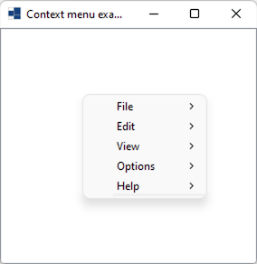
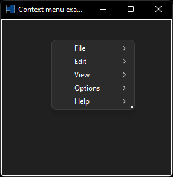
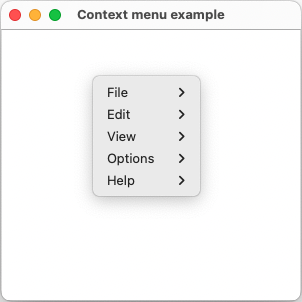
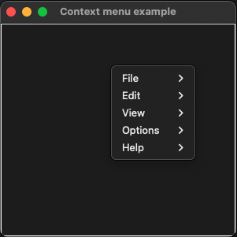
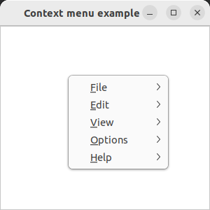
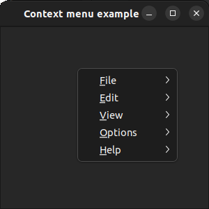

|
xtd
0.2.0
|
Loading...
Searching...
No Matches
context_menu.cpp
demonstrates the use of xtd::forms::context_menu component.
- Windows
- 

- macOS
- 

- Gnome
- 

#include <xtd/forms/application>
#include <xtd/forms/context_menu>
#include <xtd/forms/form>
#include <xtd/forms/list_box>
#include <xtd/forms/menu_images>
#include <xtd/forms/message_box>
#include <xtd/forms/system_texts>
using namespace xtd;
using namespace xtd::forms;
namespace context_menu_example {
public:
form1() {
text("Context menu example");
list_box1.parent(*this);
list_box1.dock(dock_style::fill);
list_box1.context_menu(context_menu1);
}
protected:
e.cancel(message_box::show(*this, "Are you sure you want exit?", "Close Form", message_box_buttons::yes_no, message_box_icon::question) == dialog_result::no);
};
private:
list_box1.items().push_back(ustring::format("{} clicked", as<menu_item>(sender).text()));
list_box1.selected_index(list_box1.items().size() - 1);
if (file_exit_menu_item == sender) application::exit();
}
menu_item file_new_menu_item {system_texts::new_(), {*this, &form1::on_menu_click}, menu_images::file_new()};
menu_item file_separator1_menu_item {"-"};
menu_item file_open_menu_item {system_texts::open(), {*this, &form1::on_menu_click}, menu_images::file_open()};
menu_item file_open_recent_menu_item {"Open recent", {file_open_recent_file1_menu_item, file_open_recent_file2_menu_item, file_open_recent_file3_menu_item, file_open_recent_file4_menu_item}};
menu_item file_close_menu_item {system_texts::close(), {*this, &form1::on_menu_click}};
menu_item file_separator2_menu_item {"-"};
menu_item file_save_menu_item {system_texts::save(), {*this, &form1::on_menu_click}, menu_images::file_save()};
menu_item file_save_as_menu_item {system_texts::save_as(), {*this, &form1::on_menu_click}};
menu_item file_separator3_menu_item {"-"};
menu_item file_print_menu_item {system_texts::print(), {*this, &form1::on_menu_click}, menu_images::file_print()};
menu_item file_print_preview_menu_item {system_texts::print_preview(), {*this, &form1::on_menu_click}, menu_images::file_print_preview()};
menu_item file_separator4_menu_item {"-"};
menu_item file_exit_menu_item {system_texts::exit(), {*this, &form1::on_menu_click}, menu_images::file_exit()};
menu_item edit_undo_menu_item {system_texts::undo(), {*this, &form1::on_menu_click}, menu_images::edit_undo()};
menu_item edit_redo_menu_item {system_texts::redo(), {*this, &form1::on_menu_click}, menu_images::edit_redo()};
menu_item edit_separator1_menu_item {"-"};
menu_item edit_cut_menu_item {system_texts::cut(), {*this, &form1::on_menu_click}, menu_images::edit_cut()};
menu_item edit_copy_menu_item {system_texts::copy(), {*this, &form1::on_menu_click}, menu_images::edit_copy()};
menu_item edit_paste_menu_item {system_texts::paste(), {*this, &form1::on_menu_click}, menu_images::edit_paste()};
menu_item edit_separator2_menu_item {"-"};
menu_item edit_select_all_menu_item {system_texts::select_all(), {*this, &form1::on_menu_click}};
menu_item edit_separator3_menu_item {"-"};
menu_item edit_options_menu_item {system_texts::options(), {*this, &form1::on_menu_click}};
menu_item view_back_menu_item {system_texts::back(), {*this, &form1::on_menu_click}, menu_images::view_back()};
menu_item view_forward_menu_item {system_texts::forward(), {*this, &form1::on_menu_click}, menu_images::view_forward()};
menu_item view_separator1_menu_item {"-"};
menu_item options_value_a_menu_item {"Value A", {*this, &form1::on_menu_click}, menu_item_kind::check, true};
menu_item options_value_b_menu_item {"Value B", {*this, &form1::on_menu_click}, menu_item_kind::check};
menu_item options_value_c_menu_item {"Value C", {*this, &form1::on_menu_click}, menu_item_kind::check, true};
menu_item options_separator1_menu_item {"-"};
menu_item options_value_d_menu_item {"Value D", {*this, &form1::on_menu_click}, menu_item_kind::radio};
menu_item options_value_e_menu_item {"Value E", {*this, &form1::on_menu_click}, menu_item_kind::radio, true};
menu_item options_value_f_menu_item {"Value F", {*this, &form1::on_menu_click}, menu_item_kind::radio};
menu_item options_separator2_menu_item {"-"};
menu_item options_value_g_menu_item {"Value G", {*this, &form1::on_menu_click}, menu_item_kind::radio};
menu_item options_value_h_menu_item {"Value H", {*this, &form1::on_menu_click}, menu_item_kind::radio};
menu_item options_value_i_menu_item {"Value I", {*this, &form1::on_menu_click}, menu_item_kind::radio};
menu_item help_about_menu_item {system_texts::about(), {*this, &form1::on_menu_click}};
menu_item file_menu_item {system_texts::file(), {file_new_menu_item, file_separator1_menu_item, file_open_menu_item, file_open_recent_menu_item, file_close_menu_item, file_separator2_menu_item, file_save_menu_item, file_save_as_menu_item, file_separator3_menu_item, file_page_setup_menu_item, file_print_menu_item, file_print_preview_menu_item, file_separator4_menu_item, file_exit_menu_item}};
menu_item edit_menu_item {system_texts::edit(), {edit_undo_menu_item, edit_redo_menu_item, edit_separator1_menu_item, edit_cut_menu_item, edit_copy_menu_item, edit_paste_menu_item, edit_separator2_menu_item, edit_select_all_menu_item, edit_separator3_menu_item, edit_options_menu_item}};
menu_item view_menu_item {system_texts::view(), {view_back_menu_item, view_forward_menu_item, view_separator1_menu_item, view_show_menu_item, view_hide_menu_item}};
menu_item options_menu_item {system_texts::options(), {options_value_a_menu_item, options_value_b_menu_item, options_value_c_menu_item, options_separator1_menu_item, options_value_d_menu_item, options_value_e_menu_item, options_value_f_menu_item, options_separator2_menu_item, options_value_g_menu_item, options_value_h_menu_item, options_value_i_menu_item}};
menu_item help_menu_item {system_texts::help(), {help_about_menu_item}};
forms::context_menu context_menu1 {file_menu_item, edit_menu_item, view_menu_item, options_menu_item, help_menu_item};
list_box list_box1;
};
}
auto main()->int {
application::enable_menu_images();
application::run(context_menu_example::form1 {});
}
Represents the base class for classes that contain event data, and provides a value to use for events...
Definition event_args.h:18
Provides data for the form_closing event.
Definition form_closing_event_args.h:20
Represents a window or dialog box that makes up an application's user interface.
Definition form.h:52
The xtd::forms namespace contains classes for creating Windows-based applications that take full adva...
Definition xtd_about_box.h:12
The xtd namespace contains all fundamental classes to access Hardware, Os, System,...
Definition xtd_about_box.h:10
Generated on Thu Feb 22 2024 23:28:57 for xtd by Gammasoft. All rights reserved.